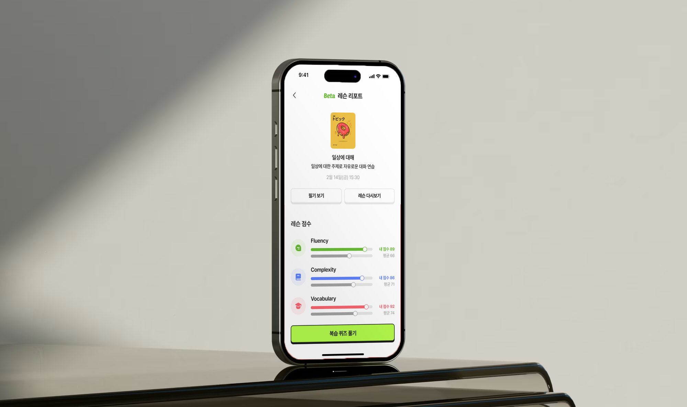
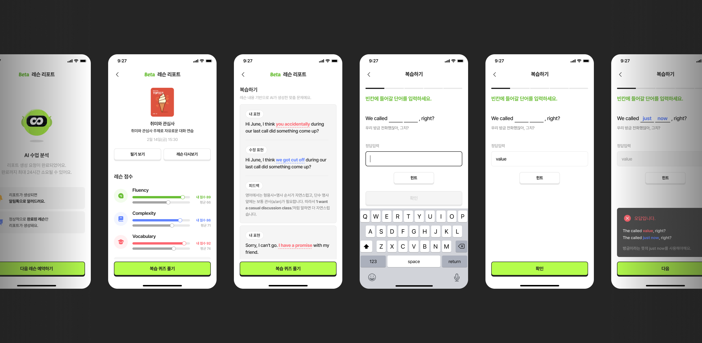
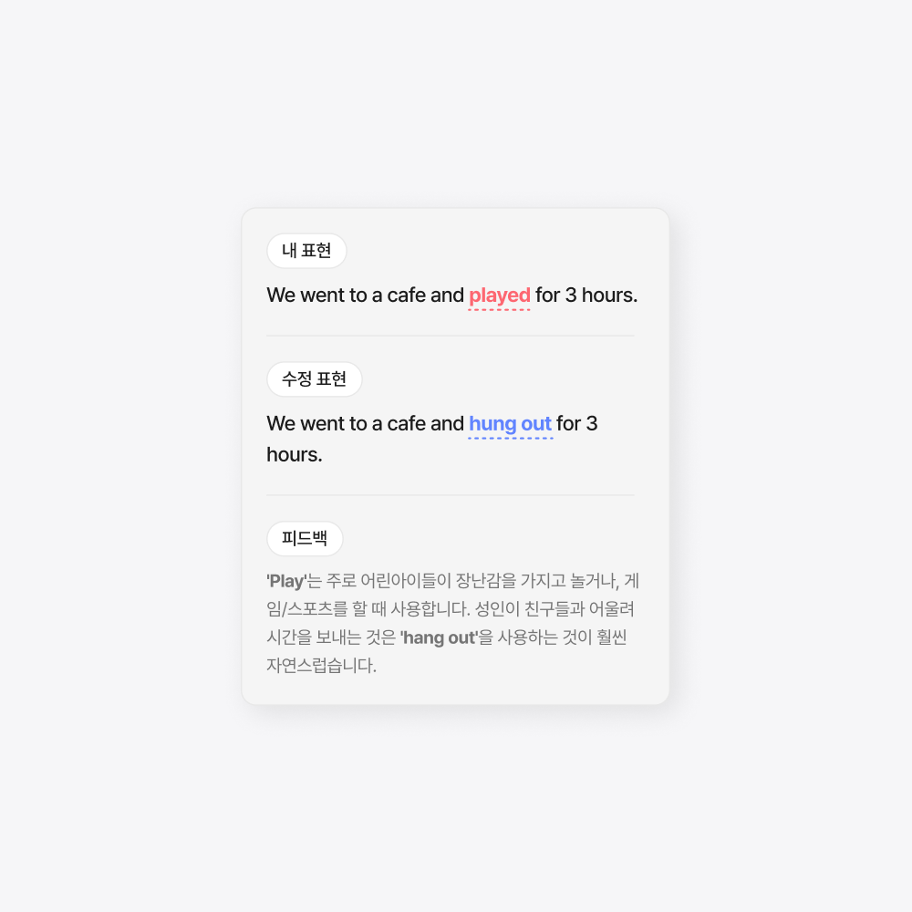
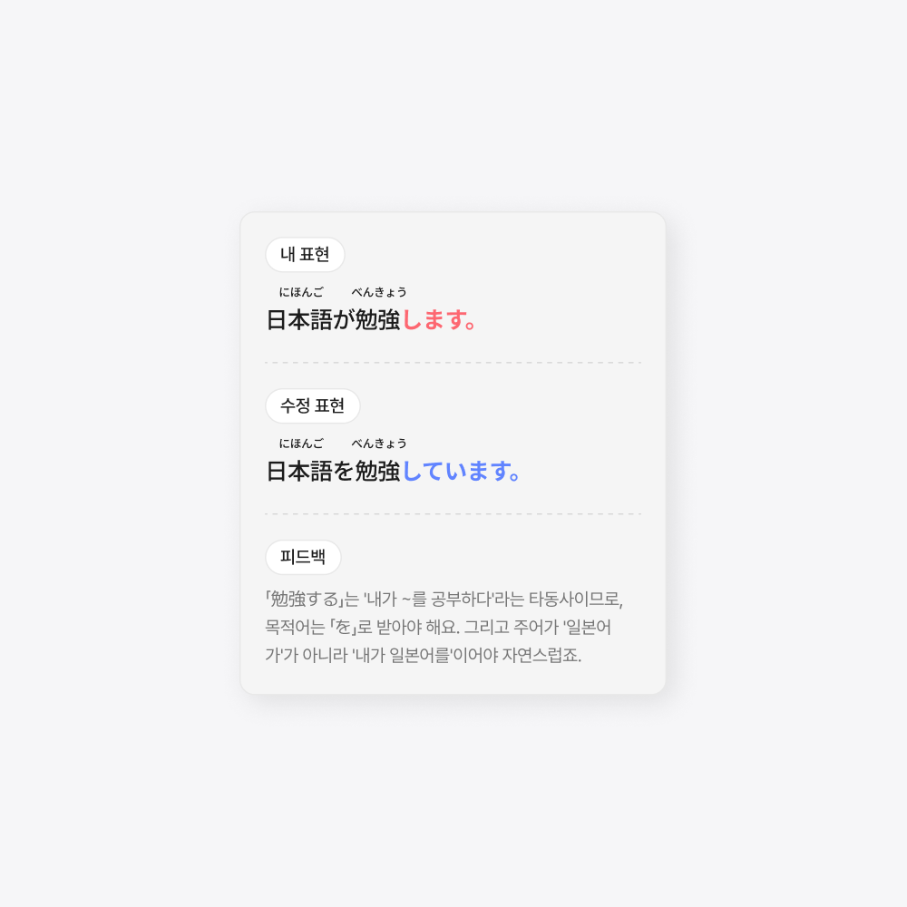
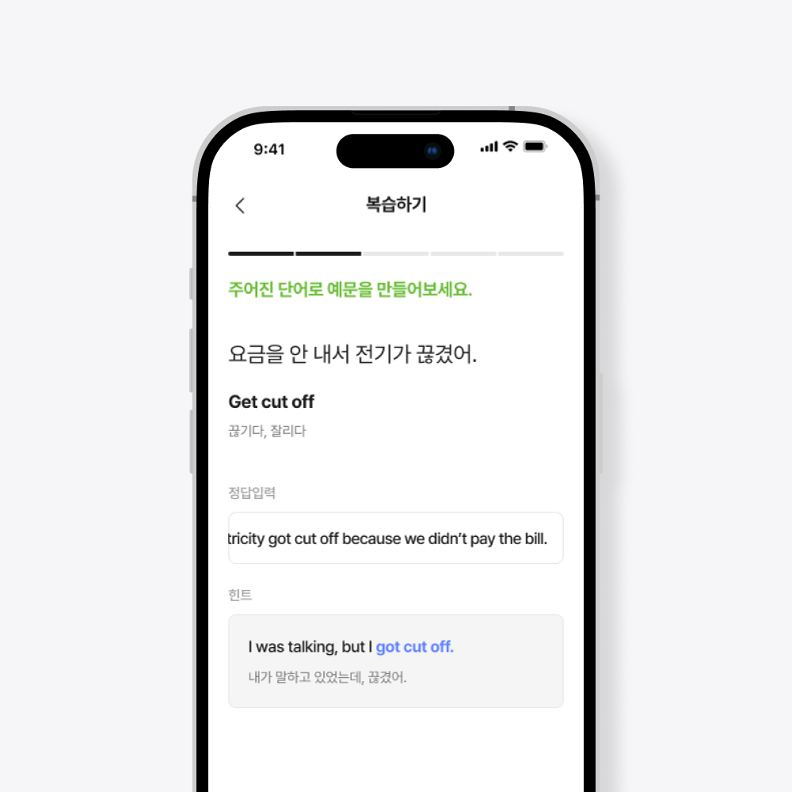
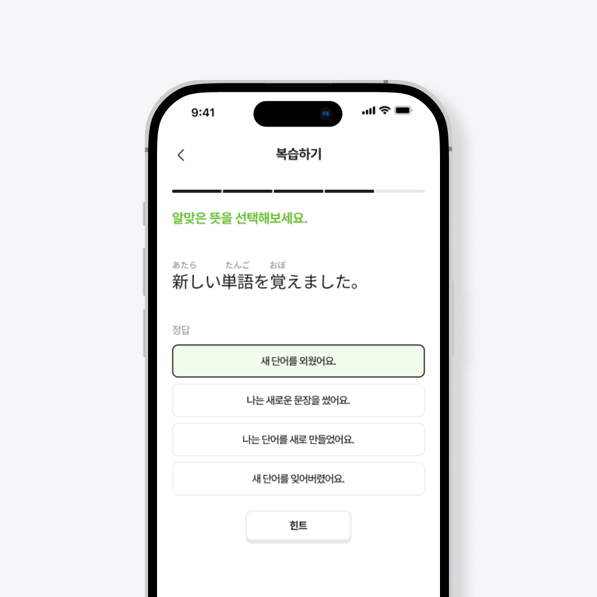
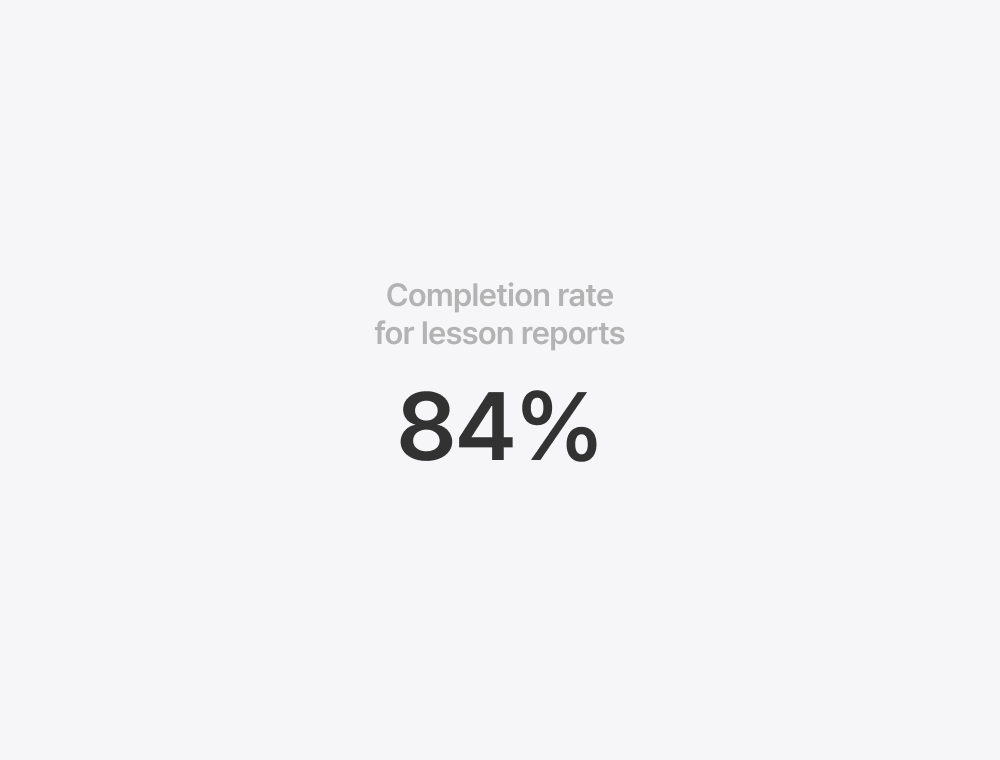
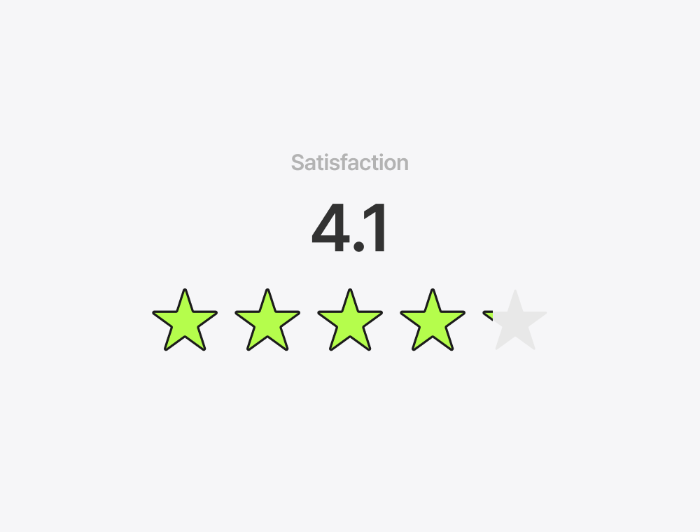

Podo AI Lesson Report
Podo 앱 내 수업 후 학습 리포트 기능입니다. 수업 데이터를 AI가 분석하여 개인화된 리포트를 생성하고, 실수했던 표현을 복습 퀴즈로 연결하여 학습이 수업 안에서 끝나지 않도록 설계했습니다.

수업이 끝나면 학습도 끝났다
1:1 회화 수업을 수강한 사용자의 대부분이 수업 직후 아무런 복습 없이 앱을 떠나고 있었습니다. 수업 중 튜터가 교정해준 표현, 새로 배운 어휘, 반복적으로 틀렸던 문법 패턴까지, 수업이 끝나는 순간 함께 사라지고 있었습니다. 수업 데이터를 학습 자산으로 전환하는 시스템이 필요했습니다.
솔직한 점수가 좌절이 된 순간
AI가 수업 데이터를 분석해 점수를 매기는 구조를 만들었지만, 초기 버전에서 문제가 발생했습니다. 레벨이 낮은 사용자는 당연히 평균보다 낮은 점수를 받게 되고, 이 점수를 보고 동기부여가 아닌 좌절을 느끼는 것이 문제였습니다.
이를 해결하기 위해 세 가지를 조정했습니다.
1. 동일 레벨 평균 비교: 전체 사용자 평균이 아닌, 유저와 같은 레벨대의 평균을 보여주도록 변경했습니다. 점수 차이가 크지 않아 비교 자체가 위협적이지 않게 됩니다.
2. 점수대 보정: 점수가 70~100점 사이에서 움직이도록 보정하여, 낮은 점수라도 절대적으로 낮아 보이지 않도록 했습니다.
3. 점수 아래 맥락 메시지: 잘했으면 "압도적"이라는 칭찬을, 못했으면 "조금만 더 반복하면 따라잡을 수 있다"는 격려를 추가했습니다. 낮은 점수라도 다음 행동으로 이어지는 동기가 되도록 설계한 것입니다.
리포트의 구조를 잡다
수업 데이터는 방대하지만, 사용자가 원하는 건 "나 오늘 잘했어?"에 대한 직관적인 답이었습니다. 정보를 전부 보여주는 것이 아니라, 읽히는 순서를 설계하는 것이 핵심이었습니다.
1. 레슨 점수: Fluency, Complexity, Vocabulary 세 영역의 점수를 프로그레스 바로 보여주고, 동일 레벨 평균과 나란히 비교합니다.
2. 복습하기: 수업 중 유저가 발화한 문장에서 틀린 부분을 캐치하여, 내 표현 → 수정 표현 → 피드백 순서로 교정해줍니다. 초보자에게는 단어 단위로, 중급 이상에게는 문장 단위로 보여줘서 레벨에 맞는 복습이 가능합니다.
3. 복습 퀴즈: 교정 내용을 확인한 뒤, 하단의 복습 퀴즈 풀기를 통해 틀린 표현 기반으로 생성된 퀴즈를 풀 수 있습니다. 리포트 확인에서 끝나지 않고, 직접 풀어보는 단계까지 이어지는 구조입니다.
글자를 읽지 못하는 유저를 위한 설계
일본어는 영어와 다른 문제가 있었습니다. 왕초보 유저가 상대적으로 많은데, 이 유저들은 발음은 할 수 있지만 글자를 읽는 것 자체가 어려웠습니다. 리포트가 읽히지 않으면 의미가 없기 때문에, 레벨에 따라 표기 방식을 다르게 설계했습니다.
1. 왕초보: 히라가나와 함께 한글 발음을 병기하여, 글자를 모르는 유저도 리포트를 읽고 복습할 수 있게 했습니다.
2. 중급 이상: 한자 위에 후리가나를 표시하여, 한자 읽기 부담만 줄이는 수준으로 도움을 조절했습니다.


틀린 표현이 퀴즈가 되는 순간
복습 퀴즈는 리포트에서 교정된 표현을 기반으로 AI가 자동 생성합니다. 초급은 4지선다 객관식, 중급은 주관식과 객관식을 혼합하여 출제하고, 틀렸을 때 피드백을 주는 것은 레벨 공통입니다.
퀴즈에서 가장 고민했던 건 힌트 버튼이었습니다. 처음에는 학습에 집중하길 바라는 마음으로 페이지 진입 5초 후에 힌트 버튼이 노출되도록 했습니다. 하지만 유저들은 답답함을 느끼고 이탈해버렸습니다. 노출 시간을 줄여봤지만 개선되지 않았고, 결국 힌트 버튼을 항시 노출하되 버튼을 눌러야 힌트 내용을 확인할 수 있는 구조로 바꿨습니다. 이 방식이 이탈률을 줄이는 데 가장 효과적이었습니다.


수업 밖으로 이어진 학습
런칭 후 1개월간 측정한 결과, 수업을 완료한 사용자의 84%가 리포트 생성을 요청했습니다. 수업이 끝나면 바로 이탈하던 기존 패턴에서, 리포트를 확인하고 앱에 머무르는 흐름이 만들어졌습니다.
같은 기간 리포트를 생성한 사용자 대상 설문(430명 응답)에서 만족도 4.1/5점을 기록했습니다.

